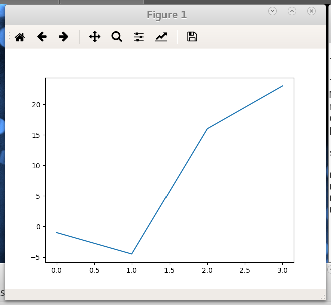

v.4.8, 15 декабря 2021 года
Matplotlib — межплатформенная библиотека для визуализации данных, предназначенная для создания изображений публикационного качества в различных форматах. Она позволяет создавать графики, гистограммы, диаграммы ошибок, диаграммы рассеяния и многое иное с помощью всего нескольких строк кода на языке Python (см. «Галерея миниатюр»).
Официальная документация доступна на сайте библиотеки. Особенно полезны руководства различных уровней сложности.
В Сети очень много описывающих использование библиотеки Matplotlib источников информации, среди которых и пособие Numerical Programming. Раздел Matplotlib Tutorial этого руководства посвящён начальному знакомству с библиотекой.
В простейших случаях с библиотекой Matplotlib можно работать, используя модуль matplotlib.pyplot,
позволяющий создавать рисунок и добавлять на него такие элементы как
линии, графические изображения, текст и другие объекты. При
необходимости можно использовать объектно-ориентированный подход,
предоставляющий возможность полного контроля над компонентами
создаваемого рисунка в более удобном виде.
Подключение библиотеки традиционно осуществляется с помощью следующей команды.
import matplotlib.pyplot as pltПростейшая программа, изображающая график кусочно-линейной функции, может быть такой:
import matplotlib.pyplot as plt
plt.plot([-1, -4.5, 16, 23])
plt.show()Запуск этой программы приводит к открытию нового окна с графиком:

Панель инструментов появившегося окна позволяет производить различные манипуляции с графиком: изменять масштаб всего изображения или его части (zoom) и позицию в окне просмотра (pan), параметры визуализации осей, линий и включённых в график изображений, сохранять график в различных форматах.
Рисунок в Matplotlib состоит из нескольких компонент:
Обычно на рисунке (figure) присутствуют:
Область рисования (axes) — один из основных объектов. Именно его следует ассоциировать с функцией plot,
используемой для построения графиков многих видов. Каждая из областей
рисования содержит две (или три для трёхмерных графиков) координатные оси (axis). Границы изменения изображаемых данных определяются методами set_xlim и set_ylim области рисования. Область рисования имеет заголовок (задаваемый методом set_title) и названия (labels) осей (определяемые методами set_xlabel и set_ylabel).
На оси (axis) наносятся деления (ticks) (большие (major) и малые (minor)) и подписи (ticklabels) к ним. Расположение делений определяется объектом Locator, а за подписи делений «отвечает» Formatter. Умение работать с этими классами обеспечивает полный контроль над визуализацией осей координат.
Кроме уже перечисленных объектов на вышеприведённом рисунке мы видим сетку (grid), линии (lines), маркеры (markers) и spines — линии, обозначающие границы области данных.
Дальнейшие примеры работы с библиотекой Matplotlib мы будем рассматривать, используя блокнот.